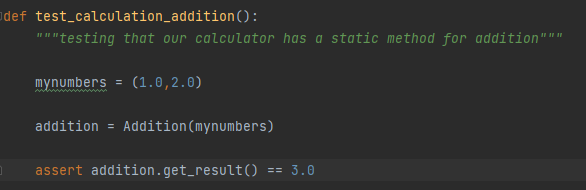

Testing provides an empirical feedback loop for development. That’s how testing keeps us safe. With tests, we know when things break. Without tests, coding can be dangerous. So, how can we write good tests? There’s a simple but powerful pattern: Arrange-Act-Assert.
- ARRANGE inputs and targets.
- ACT on the target behavior
- ASSERT expected outcomes
- Example
- mynumbers = (1.0,2.0) [ARRANGE]
- addition = Addition(mynumbers) [ACT]
- assert addition.get_result() == 3.0 [ASSERT]
Arrange step should set up the test case. Does the test require any objects or special settings? Does it need to prep a database? Does it need to log into a web app? Handle all of these operations at the start of the test.
Act steps should cover the main thing to be tested. This could be calling a function or method, calling a REST API, or interacting with a web page. Keep actions focused on the target behavior.
Act steps should elicit some sort of response. Assert steps verify the goodness or badness of that response. Sometimes, assertions are as simple as checking numeric or string values.
The following is an example of a test fie that follows the AAA pattern.
This line is the arrange block of the code that sets up the conditions for the test action.
The line of code where the Action is taken on the System Under Test (SUT).
The block of code that performs the assertions on the state of the SUT after the action.